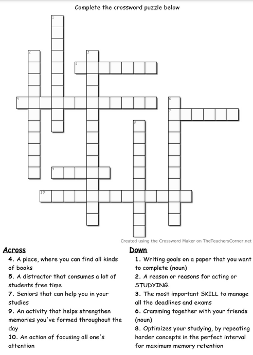

NORSSI NEWS
Back to School: Turku International School and Turun Normaalikoulu Begin a New Year
Students at Turku International School and Turun Normaalikoulu are back in class after the summer holidays, and the school year has officially begun. For the pre-Diploma Programme (DP) students, this year marks the beginning of their high school journey, while the DP2 students are starting their final year before graduation. Here at Norssi News, we’re committed to keeping the community updated on school events, academic milestones, and helpful tips for International Baccalaureate (IB) students. We wish all students a productive year ahead and hope they surpass their academic goals!
Celebrating TJ100: A Finnish High School Tradition
On September 6, Turun Normaalikoulun Lukio marked a significant annual tradition: TJ100, celebrating the milestone of only 100 days left before the Finnish matriculation exams. Third-year students, known as “Abis” or seniors, joined in a day filled with camaraderie and lighthearted fun. Dressed in Wild West attire, they playfully "rounded up" first and second-year students, marking them with lipstick to match the theme of sheriffs and outlaws.
As part of the festivities, seniors organized a series of activities in the auditorium. The underclassmen took on various challenges, such as navigating an obstacle course where they had to shout a word each time they cleared a hurdle. Teachers, secretly nominated by students, joined in on a fun limbo competition, and audience members had a chance to participate in a “Hole in the Wall” game, testing their agility and humor. The celebration concluded with western-themed music as the seniors made their exit, leaving the school buzzing with excitement.
The First Exam Week of the Year
The first examination week has just wrapped up, and it was a crucial period for many students adjusting to the demands of high school assessments. In these three-hour exams, students needed to demonstrate focused writing, quick thinking, and effective time management. Exam weeks can be particularly challenging, with common pitfalls like time mismanagement, grammar oversights, and misinterpreting questions. Mistakes, however, are a valuable learning experience and a chance for students to refine their strategies for future assessments.
Study and Exam Preparation Tips
- Master Time Management
- Simulate timed exams at home to gauge the pacing of answers.
- Prioritize questions by tackling the easier ones first to build confidence.
- Allocate time so that you can revisit challenging questions before time runs out.
- Minimize Grammar and Carelessness Mistakes
- Proofread answers before submitting to catch small errors.
- Break complex questions into parts for easier understanding and fewer mistakes.
- Practice writing under timed conditions to reduce errors due to stress.
- Use Effective Study Techniques
- Leitner System: Organize flashcards for spaced repetition, focusing on areas that need improvement.
- Interleaving: Rotate study topics to enhance memory retention by switching between subjects.
- Blurting: After studying, write down everything you know about a topic without notes to identify knowledge gaps.
- Build Exam Stamina
- Take full practice exams to improve focus for extended periods.
- Incorporate short breaks when concentration wanes during studying or exams.
- Stay hydrated and well-rested to support mental clarity and focus.
- Prepare for Future Challenges
- Embrace mistakes as learning opportunities to improve study techniques.
- Establish good habits now, as they will benefit you in higher-stakes exams later on.
- Seek support from teachers and classmates to work through challenging areas.
Good luck to all students as they take on this new academic year. Stay motivated and make the most of every opportunity to learn and grow!
Crossword Challenge: Test Your Study Skills!
Complete the crossword puzzle below and show off your knowledge of study strategies and school-related topics. The clues will guide you to words connected to productivity, focus, and helpful resources.
Be one of the first three students to submit the correct answers by 07.11.2024, and you’ll earn a well-deserved prize!
Good luck, and happy puzzling!
